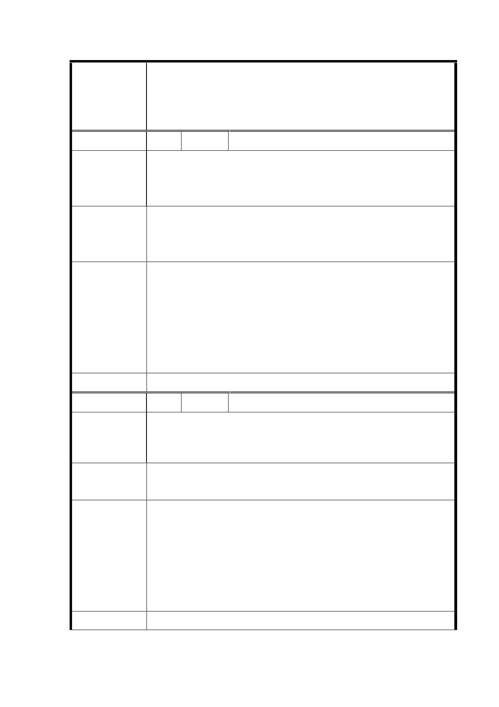

臺北市都市計畫委員會公民或團體所提意見綜理表
「變更臺北市大同區大龍段一小段 259-5 地號等 10 筆土地
國小用地為住宅區主要計畫案」及「擬定臺北市大同區大龍
案 名 段一小段 259-5 地號等 10 筆土地為住宅區（特）及道路用
地細部計畫案」
編 號 1 陳情人 李蘊蓉
大同國小孩子大量分佈在蘭州國宅及斯文里內，如果全部配
陳 情 理 由 合轉到大龍國小，那大同國小是否會變下個明倫被廢校？孩
子走這麼遠合理嗎？而且轉校會造成孩子適應問題。
1、 提供接駁車。
建 議 辦 法 2、請將都更說明會訊息直接發到北市府官方的 Line 上，可
讓大眾知道說明會訊息透明化。
1. 本計畫係規劃現有明倫國小校地改建後，以供後續蘭
州、斯文里國宅整宅計畫之中繼使用，至原於大同國小
市 府 回 應 就讀之學童是否應配合計畫調整就讀學校或學區一
說 明 節，本計畫內未有強制性規範。
2. 另 有 關 都 市 更 新 說 明 會 相 關 資 訊 公 告 於 本 府 官 方
Line，將納為後續施政之參考。
委 員 會 決 議 依市府回應說明辦理。
編 號 2 陳情人 李蘊萱
〝停車空間不足〞
陳 情 理 由 現有明倫國小 500 公尺內停車空間已不衍使用，請依現有蘭
州、斯文里車輛評估必要的空間移轉。
請都發單位用地需求評估亦正式考慮居民生活便利用車的
建議辦法
需求。
本計畫區內規劃停車空間尚足以內部自我滿足，並符合相關
法令規定，惟經初步核算計畫區周邊半徑 500 公尺範圍，不
市 府 回 應 含建物附設之汽車停車需供比為 1.96，機車停車需供比為
說 明 1.08，汽車停車供給顯示不足，未來將於本計畫區北側「北
區轉運站」規劃案內，併同納入檢討，以符合地區之停車空
間需求。
委 員 會 決 議 依市府回應說明辦理。
4